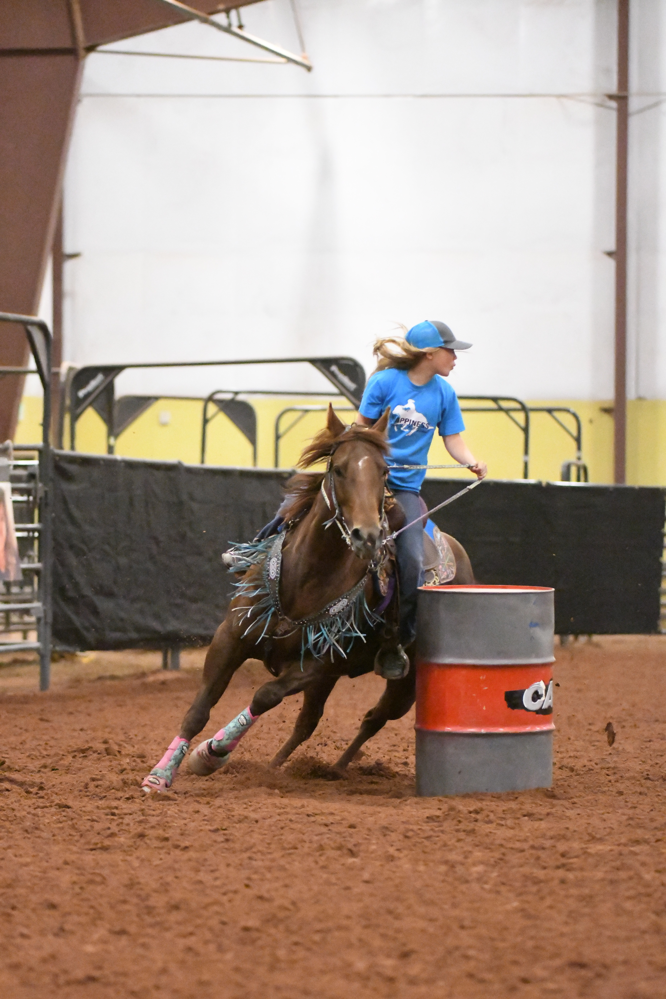
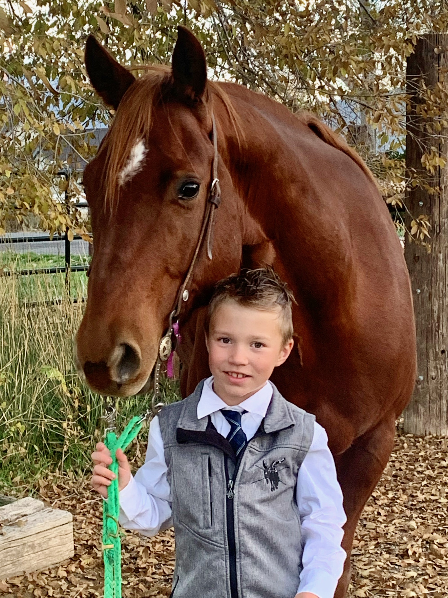
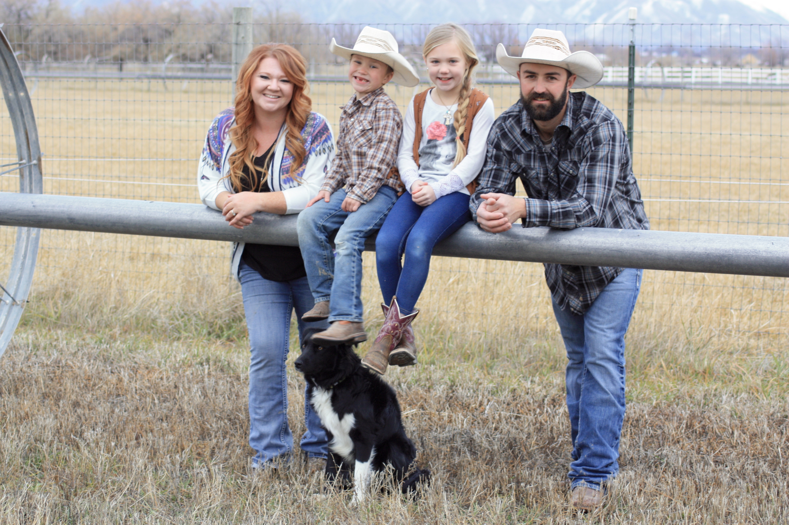
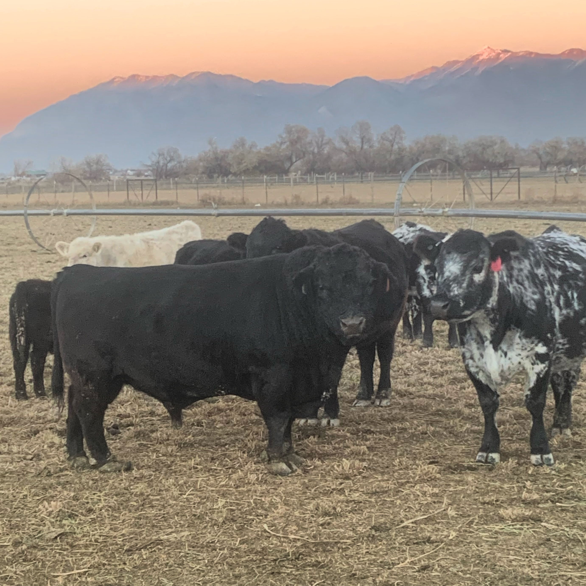

Shandy Inama
Yay Tech-Moms!!
2020 Tech-Moms graduate. Currently a student at SLCC in learning web-development.
Mom of two and farmers wife.
Mom of two and farmers wife.
I have always been so envious of my husband's passion about his work and farming. I have never had a career where
I felt the same way he did, until now! Tech-Moms as lit a fire that has put drive, passion and exitment to my life.
Growing up riding hores and raising kids in agrigulture. I'm no stanger to hardwork, leadership and teamwork. I love riding horses and being with my family out in the fields, up in the mountains or fishing by the lake.
Growing up riding hores and raising kids in agrigulture. I'm no stanger to hardwork, leadership and teamwork. I love riding horses and being with my family out in the fields, up in the mountains or fishing by the lake.
I am so intoxicated by everything I have learned so far and all that is yet to come.
Tech is a lot like having a farm and raising kids...
you never know everything!
It's always changing and that's what makes it so fun!!
Tech is a lot like having a farm and raising kids...
you never know everything!
It's always changing and that's what makes it so fun!!



